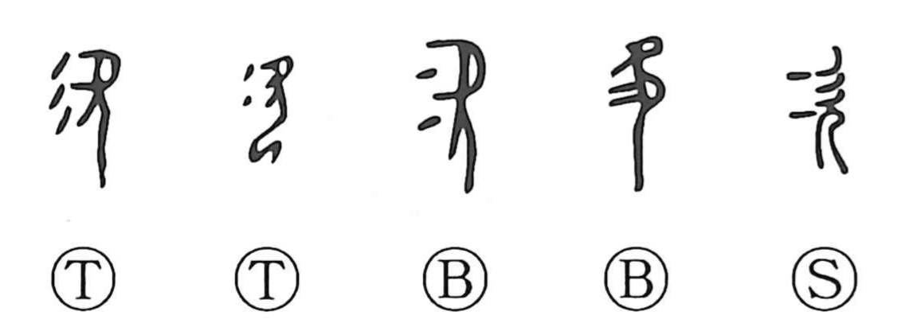

次

Kun: tsugu, tsugi, yadoru | On: ji, shi
next ・ to follow ・ order ・ sequence ・ to lodge
Explanation
次 pictures a person with the mouth open in lament. 欠 is the figure seen from the side, and the short strokes before the face show the breath escaping. The sigh is made visible beside the body.
Adding a prayer receptacle gives 咨, a lament directed to the deity. The appeal becomes a request for guidance, and 諮 later distinguishes consultation. These formations preserve the older action of sighing or appealing.
次 also interchanges with 弐, two or again. Through that use it acquires next and in succession, then order, arrangement, and rank. Another use for a temporary military lodging belongs to related encampment vocabulary. The lamenting figure and the sequencing word thus meet through the history of the writing.